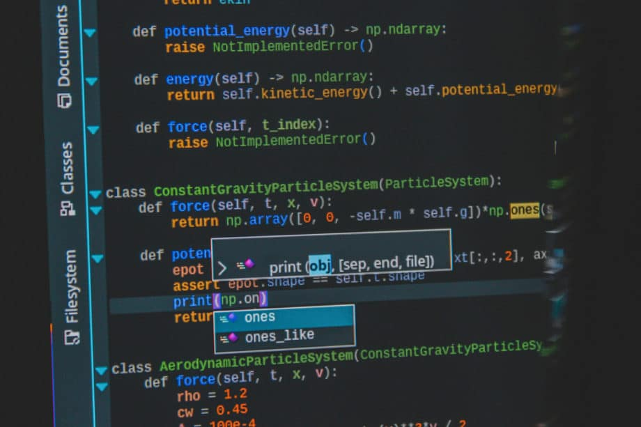

The Code for the Automotive Software
Car coding is a relatively new thing in the automotive world and it implies software modifications to a vehicle to allow the use of
functions not available in the car when it left the factory for different reasons, mainly local regulations. Coding does not
imply changing the software! It only changes preprogramed options already existent in the software.
Are there any risks while Programming a car?
Just like jailbreaking an iPhone or any software mods, the warranty of the vehicle could be voided by coding. After all, it is a
third-party intervention to the computers of the car, without the manufacturer’s approval. There is a risk that some systems might
get broken if the operator does not do everything properly. Car coding should never be done with insecurity.
is also a risk of permanent damage to a vehicle’s electronic systems. In the worst cases, one of the car’s computers could receive
irreparable harm and require replacement.

What Programming Languages are commonly used for Cars?
- C++
- In the automotive industry, programming is more of a need than a hobby and so it requires
proper language that can handle a large number of data in memory. C++ is one such language
that has been used in almost all major automobile manufacturing companies since the 1990s.
This is because of its efficiency in handling large codes with fewer bugs and easy readability by humans.
- C
- C can be non-deterministic in its behaviour for some features, it has a propensity to allow for
development bugs also, but despite these issues, C is a mature and widely supported and used programming language
that offers an impressive range of high-performing and stable compilers for CPU architectures.
- Java
- Originally created for IBM mainframes, it’s now commonly used with MySQL databases to create
tables of information that can be accessed and manipulated without any special coding knowledge required.
- Python
- As a general-purpose programming language, Python is ideal for many automotive uses. One of its
most popular and useful frameworks for coding software within automobiles is Robot Operating System (ROS).
If you need to write software that controls automotive components or sensors, ROS has everything you need
and helps you build quickly.